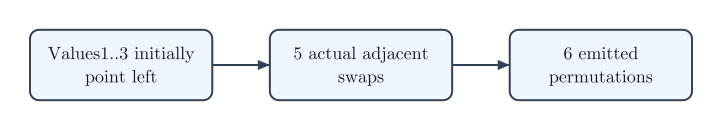
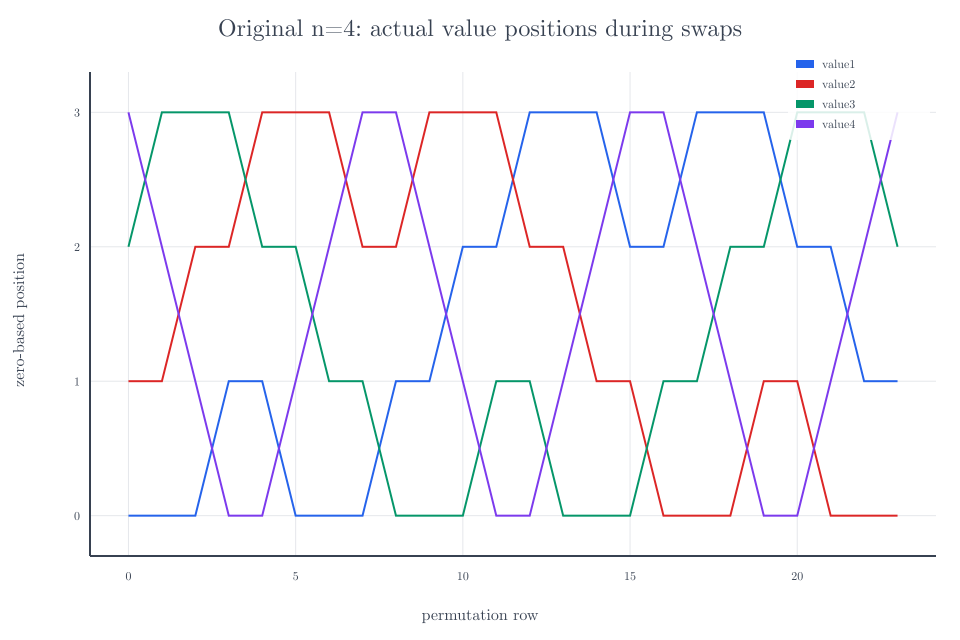
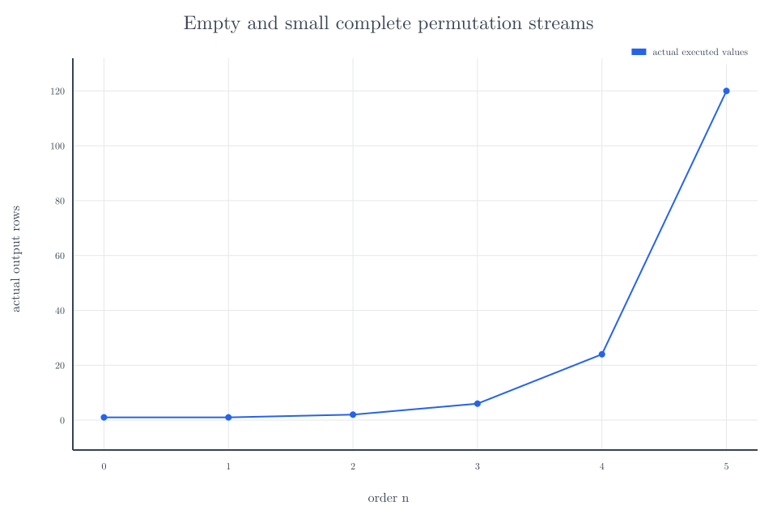
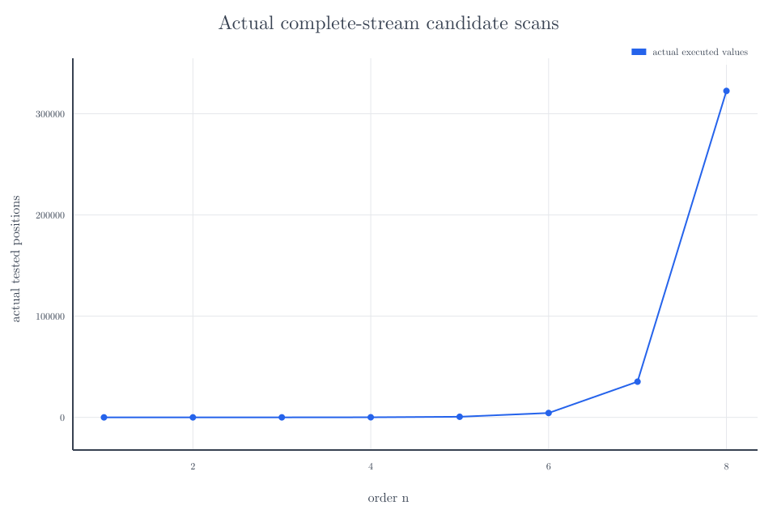

SJT permutations: actual largest-mobile adjacent swaps
Abstract
Generate all permutations while exchanging adjacent values once per transition. Directions belong to values, and the largest mobile value determines the next swap. The native producer records value positions while swapping.
Mechanism and mathematical scope
Start1..n with every direction left. A value is mobile when its neighbor in its direction exists and is smaller. Swap the largest mobile value, then reverse directions of every larger value. Each successive permutation differs in exactly one adjacent transposition; the complete stream has n! rows. This implementation scans n positions per search, including the final failed search, so materialized time and storage grow factorially. The empty permutation is one row.
A tiny actual producing history
The table and native concept diagram read the same producing execution. Every block below is a complete editable C++ program.
#include <dm/dm.hpp>
int main() {
namespace a = dm::algorithms;
namespace g = dm::graphics;
std::filesystem::create_directories("build");
auto r = a::sjt_trace(3);
std::print("| actual permutation | mobile | from | to | directions by value |\n| --- | ---: | ---: | " "---: | --- |\n");
for (const auto &s : r.history)
std::print("| `{}` | {} | {} | {} | `{}` |\n",
r.permutations[s.permutation_index], s.mobile, s.from, s.to,
s.directions);
g::Diagram concept_diagram(48, 1100);
concept_diagram.node("n0", {0, 0}, "Values1..3 initially point left");
concept_diagram.node("n1", {5, 0},
std::format("{} actual adjacent swaps",
r.adjacent_swaps));
concept_diagram.node("n2", {10, 0},
std::format("{} emitted permutations",
r.permutations.size()));
concept_diagram.edge("n0", "n1").edge("n1", "n2");
concept_diagram.save_svg("build/steinhaus_johnson_trotter_tiny.svg");
}| actual permutation | mobile | from | to | directions by value |
|---|---|---|---|---|
[1, 2, 3] | 0 | -1 | -1 | [-1, -1, -1, -1] |
[1, 3, 2] | 3 | 2 | 1 | [-1, -1, -1, -1] |
[3, 1, 2] | 3 | 1 | 0 | [-1, -1, -1, -1] |
[3, 2, 1] | 2 | 2 | 1 | [-1, -1, -1, 1] |
[2, 3, 1] | 3 | 0 | 1 | [-1, -1, -1, 1] |
[2, 1, 3] | 3 | 1 | 2 | [-1, -1, -1, 1] |

The retained original experiment
#include <dm/dm.hpp>
int main() {
namespace a = dm::algorithms;
namespace g = dm::graphics;
std::filesystem::create_directories("build");
auto r = a::sjt_run(4);
std::vector<double> x;
for (std::size_t i = 0; i < r.permutations.size(); ++i)
x.push_back(i);
std::print("| original row | actual permutation |\n| ---: | --- |\n");
for (std::size_t i = 0; i < r.permutations.size(); ++i)
std::print("| {} | `{}` |\n", i, r.permutations[i]);
auto plot = g::RPlot::create();
const std::array<g::RGB, 4> colors{{{37, 99, 235}, {220, 38, 38},
{5, 150, 105}, {124, 58, 237}}};
for (int v = 1; v <= 4; ++v) {
std::vector<double> y(r.value_positions[v].begin(),
r.value_positions[v].end());
plot.lines(x, y, std::format("value{}", v), colors[v - 1]);
}
plot.title("Original n=4: actual value positions during swaps").x_label(
"permutation row").y_label("zero-based position");
plot.save_svg("build/steinhaus_johnson_trotter_original.svg");
}| original row | actual permutation |
|---|---|
| 0 | [1, 2, 3, 4] |
| 1 | [1, 2, 4, 3] |
| 2 | [1, 4, 2, 3] |
| 3 | [4, 1, 2, 3] |
| 4 | [4, 1, 3, 2] |
| 5 | [1, 4, 3, 2] |
| 6 | [1, 3, 4, 2] |
| 7 | [1, 3, 2, 4] |
| 8 | [3, 1, 2, 4] |
| 9 | [3, 1, 4, 2] |
| 10 | [3, 4, 1, 2] |
| 11 | [4, 3, 1, 2] |
| 12 | [4, 3, 2, 1] |
| 13 | [3, 4, 2, 1] |
| 14 | [3, 2, 4, 1] |
| 15 | [3, 2, 1, 4] |
| 16 | [2, 3, 1, 4] |
| 17 | [2, 3, 4, 1] |
| 18 | [2, 4, 3, 1] |
| 19 | [4, 2, 3, 1] |
| 20 | [4, 2, 1, 3] |
| 21 | [2, 4, 1, 3] |
| 22 | [2, 1, 4, 3] |
| 23 | [2, 1, 3, 4] |

Explicit controls
#include <dm/dm.hpp>
int main() {
namespace a = dm::algorithms;
namespace g = dm::graphics;
std::filesystem::create_directories("build");
std::vector<double> x, y;
std::print("| n | actual rows | swaps | terminal-inclusive mobile tests |\n| ---: | ---: | ---: | ---: " "|\n");
for (std::size_t n = 0; n <= 5; ++n) {
auto r = a::sjt_run(n);
std::print("| {} | {} | {} | {} |\n", n, r.permutations.size(),
r.adjacent_swaps, r.mobile_tests);
x.push_back(n);
y.push_back(r.permutations.size());
}
auto plot = g::RPlot::create();
plot.lines(x, y, "actual executed values", {37, 99, 235}).points(
x, y, {37, 99, 235}, 4).title("Empty and small complete permutation streams").x_label("order n").y_label("actual output rows");
plot.save_svg("build/steinhaus_johnson_trotter_controls.svg");
}| n | actual rows | swaps | terminal-inclusive mobile tests |
|---|---|---|---|
| 0 | 1 | 0 | 0 |
| 1 | 1 | 0 | 1 |
| 2 | 2 | 1 | 4 |
| 3 | 6 | 5 | 18 |
| 4 | 24 | 23 | 96 |
| 5 | 120 | 119 | 600 |

Actual selected work and sensitivity
#include <dm/dm.hpp>
int main() {
namespace a = dm::algorithms;
namespace g = dm::graphics;
std::filesystem::create_directories("build");
std::vector<double> x, y;
std::print("| n | actual rows | actual mobile tests | direction flips |\n| ---: | ---: | ---: | ---: " "|\n");
for (std::size_t n = 1; n <= 8; ++n) {
auto r = a::sjt_run(n);
x.push_back(n);
y.push_back(r.mobile_tests);
std::print("| {} | {} | {} | {} |\n", n, r.permutations.size(),
r.mobile_tests, r.direction_flips);
}
auto plot = g::RPlot::create();
plot.lines(x, y, "actual executed values", {37, 99, 235}).points(
x, y, {37, 99, 235}, 4).title("Actual complete-stream candidate scans").x_label("order n").y_label("actual tested positions");
plot.save_svg("build/steinhaus_johnson_trotter_work.svg");
}| n | actual rows | actual mobile tests | direction flips |
|---|---|---|---|
| 1 | 1 | 1 | 0 |
| 2 | 2 | 4 | 0 |
| 3 | 6 | 18 | 1 |
| 4 | 24 | 96 | 6 |
| 5 | 120 | 600 | 29 |
| 6 | 720 | 4320 | 148 |
| 7 | 5040 | 35280 | 867 |
| 8 | 40320 | 322560 | 5906 |

API and interpretation
Complete factorial output and copied histories are checked before generation. Values must fit the int index representation. This is a materializing API, not a constant-memory iterator. Actual position trajectories are producer output, not report-side inverse-permutation reconstruction.
Reusable producers, fixtures and histories live in the canonical C++ library. Captured records own their values and do not come from a separate report replay. Selected counters and record/scalar policies are specified at their API boundaries; they are not peak-byte or wall-time budgets. Synthetic structural inputs are controlled fixtures for these mechanisms.
References
- Johnson, Generation of Permutations by Adjacent Transposition, Mathematics of Computation17 (1963),282-285
- Trotter, Algorithm115: Perm, Communications of the ACM5 (1962),434-435
Verified in the shared ten-document batch: 58 scoped native cases;20 directly
instrumented ASan/UBSan cases;90 executable public examples;416/416 definitions
across25 full scopes;10 hovers;1968 independent records/417332 checks;frozen
comparisons across all ten families with SIP returned-iterate correction
recorded;14 checkout/installed standalone headers and linked ten-family
consumer;40 executed programs and40 inspected figures with both exports.
Receipts: build/mepml-conversion/batch-374-383/.